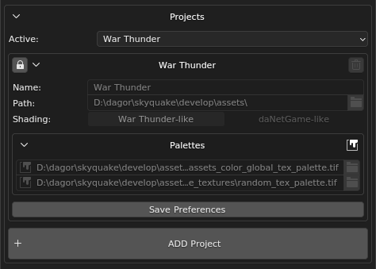
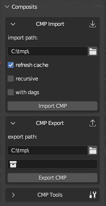

dag4blend
Installation
Go to Edit > Preferences > Add-ons in Blender.
Click small dropdown on the top right corner and choose Install from Disk…
Navigate to the
dag4blend.zipadd-on file.
Initial Configuration
After installation, check the box next to the add-on in the list if it hasn’t activated automatically.
Before you start working, you need to perform some initial configuration, so don’t close the Preferences window yet:

General Paths
ObjProps presets: Directory containing preset files for Object Properties.
If you’ve used a previous version of the add-on, point this path to the same folder after installation. If this is your first installation, create a dedicated folder for presets outside the add-on directory, so they won’t be lost during a clean reinstall. Until a valid directory path is specified, the preset menu will not be displayed.
dagorShaders.blk: Configuration file describing the shaders.
A default version is included with the add-on, but you can redirect it to the one located in your 3ds Max tools folder. That file is used by Asset Viewer and Dagor Max Tools, and editing a single shared version may be more convenient. A separate config is used only because the add-on is installed into a random folder, and the path to the external config cannot be known in advance for each user.
Projects
For the add-on to function correctly, you must define at least one project corresponding to a game you are working on. If you are working on multiple games, create a separate project for each.
Tip
Many interface elements have tooltips that appear when you hover over them.
Clicking ADD Project creates a new project. Each unconfigured field will be marked with an exclamation icon.
Name: The name of the project as it appears in the dropdown list. Choose something meaningful.
Path: The global path to the directory
.../develop/assets/. The add-on will use this location to search for textures, proxy materials (proxymats), and other resources when needed.Shading: Shader behavior differs slightly between projects. The add-on supports two main profiles: daNetGame-like and War Thunder-like shaders.
Which should you choose? If your project is not War Thunder, select daNetGame-like.
Palettes: Paths to the global project palette and the current level palette. Specify the path to the
.tifpalette file.
Click Save Preferences to save these settings globally for Blender. In theory, preferences should be saved automatically on exit, but it’s safer to save them manually.
In the upper-left corner, you can also see a lock icon: this locks parameters from accidental editing or deletion.
Caution
Locking only prevents manual input.
In Blender, hovering over a locked field and pressing Backspace will still clear it, even if it’s locked.
If you’re working on several projects in parallel, you don’t need to switch the active one via User Preferences. You can select and edit the active project directly from the Scene Properties panel.
Experimental Features
The Experimental Features section enables tools that are functional but still limited in some ways.

Currently, you can enable:
Legacy material parameters (hidden by default)
Important
The add-on applies settings when these parameters change, but only if there is something to apply them to. Therefore:
To fix shader mode, reselect the project after creating at least one dagor material (dagormat) in the scene.
To fix palette settings, reselect the project after creating a dagormat with paint layers.
By default, the global and local palettes will appear as plain red and green fills, and shaders will operate in War Thunder-like mode.
To correct this, simply reselect the project in the dropdown after the first asset import or creation.
Log and Text Editors
The add-on uses Blender’s text editor to display logs.
If there is at least one text editor area in the current layout, a text block named “log” will be opened in it. Otherwise, a new text editor area will automatically be created on the left side of the Viewport:
Import/export functions (and some other operations) write execution information to the log text block, but do not clear it automatically. Make sure to clear it manually from time to time, after verifying that there are no unreviewed errors or warnings remaining.
To clear the log, you can simply delete the entire text block, the next time it’s needed, the add-on will automatically create a new one. This approach is usually faster than selecting all lines and deleting them manually with Backspace or Delete.
When editing Object Properties, dagormats, or proxymats as text, the add-on also creates dedicated text blocks for them. The name of each text block is shown in its tooltip.
Material Setup
Materials for the Dagor Engine are configured in a dedicated tab called dagormat. This tab contains several collapsible sub-sections that can be expanded or hidden as needed:

Main

1 Reload shaders: This button reloads the list of shaders from
dagorShaders.blk without restarting Blender.
2 Legacy properties: This block is hidden by default. It includes ambient, specular, diffuse, emissive, and power parameters. These are legacy and are not used by modern shaders.
3 Backfacing mode: Here you can specify whether the material is single- or double-sided, and which type of two-sided rendering to use:
1sided: Regular single-sided material. Backfaces are ignored.
2sided: Each triangle is rendered from both sides. Slightly heavier on the shader but lighter on geometry. Use primarily for complex geometry (e.g., tree crowns).
real2sided: In the engine, each triangle with this material (still technically single-sided) is duplicated and flipped to be visible from both sides. Lighter shader but doubles mesh complexity, best used for simple geometry.
4 shader: Current shader. This field can appear either as a text field or a dropdown list.
5 The dropdown toggle button enables shader selection from those
found in dagorShaders.blk.
6 When filtering is enabled, only shaders belonging to the active category will be visible in the shaders dropdown 4.
7 category: The active category dropdown, appears only when filtering is active.
Textures
A straightforward section listing all textures used by the material.
You can copy-paste paths directly from Asset Viewer or Explorer, quotation marks will be automatically removed.
Several input formats are supported:
full file path
filename only (without path)
asset name only (without extension)
Optional
This section provides visual editing of shader parameters.

Values can be entered manually or selected from a dropdown, similar to how shader selection works.
Parameters can be deleted:
individually
in groups
all at once (using the trash can icons at corresponding hierarchy levels).
If the shader is not defined in the configuration, the parameter dropdown will be empty, and any added values will be placed under the Unknown category. If the shader is known, parameters will be grouped and displayed according to their definitions.
dagorShaders.blk
This file describes shaders as a unified hierarchy:
shader_category{
name:t="Unique Category Name"
description:t="What this category contains?" // optional parameter
shader{
name:t="some_shader_class"
description:t="What this shader does?" // optional parameter
parameters_group{
name:t="Unique group name" /* Unique for this shader only.
Two different shaders can have groups with matching names if necessary. */
description:t="What it does, why parameters grouped?" // optional
parameter{
...
}
parameter{
...
}
}
parameter{
name:t="unique_parameter_name"
type:t="p4"
description:t="Does things and stuff" // optional
default:p4=10.0, 11.0, 2.4, 6.8 /* optional. Will be used instead of type-specific value.
Affects material merging. */
soft_min:r=0.0 // optional, for vectors it's a single value, shared between all elements
soft_max:r=20.0 // optional
custom_ui:t="color" // optional, for now only "p4 as color" is available
}
}
shader{
...
}
}
shader_category{
...
}
Structure Overview
At the root level, there are shader categories.
Each category must have:
A unique name (required)
An optional description, which appears as a tooltip in the UI when hovering over the category name.
Each category contains multiple shaders, which must also have:
A unique name (required)
An optional description, shown in tooltips as well.
Each shader contains parameters, which can be either:
Placed directly in the shader root
Grouped inside named parameter groups (nested groups are not allowed).
Each group must have:
A unique name within the shader
An optional description
Each parameter must define:
A name (required)
A data type
Supported Parameter Types
At the time of writing, the following data types are supported:
Name |
Type |
Description |
|---|---|---|
|
bool |
Boolean toggle with two states. Accepts Any other value is invalid and defaults to |
|
integer |
Integer value. Defaults to |
|
real (float) |
Floating-point number. Defaults to |
|
point |
Four consecutive real values. Defaults to
|
The Dagor API supports more parameter types, though they are not yet used in
practice. You can find examples of all supported types in the test_shader
section at the end of dagorShaders.blk.
Optional Parameter Fields
Parameters may also include the following optional fields:
default: Must match the parameter’s data type.If provided, this value will be used instead of the type’s intrinsic default. The
Reset to defaultoperator restores this value. When merging materials, parameters are treated as identical if one is missing and the other equals its default value. Avoid using defaults that differ from the engine’s internal defaults.soft_min: Defines a minimum value limit to prevent accidental input errors.For
p4, this appliesrto all four components equally. Displays an error icon in the UI if the current value is below the limit; hovering shows the valid range. Not applicable tobor text (t) types.soft_max: Similar tosoft_min, but defines an upper limit.custom_ui:t: Allows rendering a custom widget instead of the default one.Currently, only one exists:
colorforp4. New widgets will be added totest_shaderas examples when introduced.
Tools

The Text Editing block allows editing the active material in text format. If no text editor area is present, a new one will be added to the left of the Viewport; otherwise, the text will open in the first available text editor.
The Search and Process blocks are available in two modes:
Current material: For the active material only
All materials: For all materials in the scene
To use search tools, make sure a valid project is selected. For example, when
working on an Enlisted asset, set the project to Enlisted.
Available functions:
Find missing textures/Find missing proxymats: Finds all existing textures and proxymats in the current project.
Texture search affects only Viewport display, it does not modify material file paths.
Rebuild: Rebuilds the material(s) for Viewport rendering and refreshes the parameter UI.
Reuses existing resources from the
.blendfile to improve performance.FORCE REBUILD: Performs a full rebuild, forcibly replacing all node groups with the current versions.
Useful when opening old scenes where something behaves incorrectly (e.g., Texture Baker fails or Rebuild function gives errors). Typically caused by resource mismatches.
Update texture paths: Finds invalid texture paths in dagormats and replaces them with existing Viewport paths, if available.
Should be used after texture search.
Clear texture paths: Removes directory path information, leaving only texture file names.
Proxy
As mentioned earlier, the add-on also supports proxymats.

Parameter data for proxymats is read from their .blk files, so individual
settings are hidden. Instead, a dedicated Proxy tab appears, allowing you to
specify the folder path containing the proxymat.
You can still edit it as text or temporarily uncheck the is proxymat box to modify it directly.
Changes can be reverted by reloading data from the file, or saved back to the proxymat. You can also convert any regular material into a proxymat simply by toggling the checkbox and saving it into the desired folder.
Important
Proxymats in Blender use the file name, not a user-defined name. During import, the shader name is automatically renamed if it differs from the file name.
See also
For more information, see Proxymats.
Object Properties
This panel is located in the N-panel, under the Dagor tab. It displays parameters of the active object, and remains hidden when no object is selected.

Properties
The visual editor allows you to add, remove, and modify parameters individually.
The UI format is determined by the value string.
If the displayed UI type is incorrect, for example, prop:r=0 produces an
integer toggle, but the variable should be a floating-point slider, enter the
existing parameter’s name in the name field and specify its value in the
correct format (e.g. use 0.0 instead of 0 for a float slider).
Important
Specifying the type in the name using a colon (:) is mandatory.
Presets
Once you’ve configured object properties, you can save them as a preset and quickly apply them to other objects later.
To save the active object’s properties:
Enter a name for the new preset.
Click Save preset as:.
To apply an existing preset:
Select the desired preset from the dropdown list.
Click Apply preset:.
Presets are stored as plain text files, so you can edit them manually in any
text editor. The open presets folder button opens the directory containing
all preset .txt files, where you can add, remove, or modify them. All changes
are applied immediately (no restart required).
If the presets folder does not exist, the entire tab will be replaced with a warning message “Presets folder not found. Please, set existing one” and a path input field:

To change an existing folder path, you can either:
Update it in Addon Preferences, or
Click the gear icon next to open presets folder.
Tools
Text-based editing inside Blender is similar to material editing, it requires opening the corresponding text file in Blender’s text editor.
Open as text opens the current object’s properties in a text editor (the filename is shown in the tooltip).
Apply from text applies properties from the opened text block.
Transfer Attr copies the property list from the active object and applies it to all selected objects, saving time compared to manual copying.
Starting from version 2.1.0, the temporary text block props_temp is opened
automatically when Blender’s internal text editor is active.
Note
Invalid or unrecognized values in Object Properties are written into a
special field called broken properties, separated by semicolons (;),
allowing you to restore them manually.
Similarly, incorrect values encountered when using Apply from text are also recorded in this field.
Export
Like any other import/export add-on, the DAG exporter is available through File > Export. However, to save time during frequent re-exports while working, the exporter is also accessible from the N-panel (recommended for daily use).
Both versions are functionally identical, use whichever is more convenient for your workflow.
Batch Export
General Parameters
vNormals: Exports custom vertex normals if they exist on the object. If no custom normals are present, smoothing groups will be exported instead, even when this option is enabled.
applyMods: Exports geometry with visible modifiers applied, instead of the original unmodified mesh.
Optimize Materials: Keeps only materials that are actually assigned to at least one polygon per object.
Path: The directory where exported files will be saved.
Cleanup Names: Removes Blender’s numeric suffixes (e.g.,
.000+) from object names during export.Warning
Use Cleanup Names only when exporting composites for 3ds Max! It can cause errors. For in-game
.dagfiles, no two objects should share the same name.Name: A context-dependent field available only when exporting to a single
.dagfile. It is hidden in other export modes.Collection: Also context-dependent. You can either select a collection from the dropdown or drag and drop it directly from the Outliner.
Limit by: Defines the export mode.
Export Modes


{kind=link}
{kind=link}
Collection Properties
Just like Object Properties, this panel is located in the N-panel under the Dagor tab. It shows properties of the active collection. Unlike Object Properties, these settings exist only within Blender and are used for internal processing.

Override Name
Allows you to override the name under which the collection will be exported in Col.Separated mode. By default, this override is disabled.
When importing .dag files whose names exceed 63 characters (the Blender name
limit), the full original name will be stored in this field to preserve
characters that did not fit. You can also manually redefine the name, simply
enable the checkbox and enter a new one.
A much more useful trick, however, is that this field can also be used to define a subpath for export. This subpath will be appended to the main export path, allowing more organized file placement.
If you do not need to override the collection name, you can end the subpath with
an asterisk *. During export, the asterisk will automatically be replaced with
the collection’s actual name.
Example:
Export path result:
C:\tmp\subfolder\yet_another_subfolder\cube.lod00.dag
This is particularly convenient when working with complex assets such as buildings, for example:
composit_parts\windows\*
composit_parts\doors\*
You can also fully override the export path by starting it with a drive letter
(e.g., D:\).
Type
Used primarily by the Composite Editor.
When importing, this field is filled automatically with the node type, and when exporting, it defines the asset type to ensure unambiguous identification, preventing naming conflicts between assets that share identical names (commonly seen among composites and render instances).
For manually created collections that are intended for export as composites, you should specify this field manually.
Although dynmodel appears in the list, it is not currently used, you cannot
place them via the Composite Editor. For the same reason,
the composite importer assumes that any asset with .lod**.dag in its name
represents a render instance, not a dynmodel.
Geometry Nodes
Note
Geometry Nodes currently cannot be combined with custom normals, because applying the modifier erases them.
If you are placing object instances using Geometry Nodes, make sure to include a Realize Instances node in your node tree, otherwise, that geometry will be lost during export.
Technically, before the Realize Instances node, these are treated as empty placeholders (similar to composite nodes) and have no actual geometry of their own.
Smoothing Groups
During development, a bug was discovered in Blender’s built-in function responsible for calculating smoothing groups when exporting to formats that use them.
As a workaround, a dedicated smoothing group editor has been added. It is available in Edit Mode when the Selection mode is set to Faces.
Overview
When importing .dag files, objects retain their original smoothing groups from
the source file. However, newly created objects do not have smoothing groups by
default, you must first generate them using the Init button.

Once smoothing groups exist, the interface behaves similarly to the one in 3ds Max, except that Blender does not display smoothing group visualization in real time.

A partial preview is available via Convert to sharp edges, which highlights sharp edges derived from smoothing groups, though it does not show problematic points.
Starting from version 2.1.0, a Live Update feature was introduced: when
enabled, sharp edges are automatically recalculated whenever smoothing groups
are edited. This feature can significantly slow down performance on complex
geometry, so it is disabled by default.
The same version also adds the ability to select polygons by smoothing group. You can do this by clicking the corresponding group button in the Select by SG sub-panel.
Note
Selection by smoothing group adds to the current selection, it does not replace it.
If you need to select only a specific smoothing group (e.g., group 3), be sure to clear your selection first.
When to Use?
You may need to adjust smoothing groups manually in the following cases:
When certain sharp edges do not fully divide the surface into closed regions, causing Blender’s smoothing group calculation to fail.
After modifying an imported
.dagfile, if the smoothing groups were saved as an attribute and became inconsistent.
Example
Below is an example of an incorrect calculation:
On the right, a single smoothing group is applied to the entire mesh. As a result, internal sharp edges are ignored, producing overly smooth shading. Smoothing groups should instead be assigned to each region enclosed by sharp edges.
If sharp edges do not extend fully across the model (failing to separate it into distinct “islands”), those edges will be lost during export, and the shading in those areas will appear blurred or “melted”.
Import
Similar to the export process, there are two ways to import .dag files: a
standard import via File > Import, and a batch import via the
N-panel (recommended for frequent use). Both methods provide identical
functionality, choose whichever is more convenient for your workflow.
Importing and Textures
A .dag file contains not only the texture name, but also its file path.
However, when assets are moved or transferred between systems, these paths often
become invalid.
If a texture cannot be found at its stored path, or if the .dag file contains
only the texture name, it will be temporarily replaced with a UV checker
texture.
If the same texture is used across multiple materials, updating its path in one material is enough, the correct texture will automatically load for all other materials that reference it.
Texture slots are still used in the same way as in
rendinst_simple
shader, regardless of the actual shader selected. However, shader nodes are now
arranged in a structured, non-overlapping layout. All texture images are added
to the Shader Editor, so with Node Wrangler enabled, you can preview
them instantly by pressing Shift+Ctrl+LMB.
File > Import

Optimize material slots: removes unused slots and merges slots that share the same material.
Import LODs: imports all available LOD levels, not just the selected one.
Import dps: imports all
damage_parts(_dp).Import dmgs: imports all
damageversions.Replace existing: if a collection with the same asset name already exists in the scene, its contents will be replaced by the imported
.dagfile instead of creating a duplicate (.001+). Useful for quickly rolling back large sets of changes.
For importing many .dag files at once, use batch import.
Batch Import
This panel allows importing multiple .dag files from a specified folder.

Several import modes are available, and you can read the description of the selected mode in the help section by clicking the question mark icon .
The Batch Import panel has two main blocks: global parameters (Parameters) and mode (Simple, Wildcard, and Regexp).
Parameters
The import parameters are shared across all modes:
Search in subfolders: searches not only the selected folder, but also all its subdirectories.
Use cautiously, as it can freeze Blender if too many matches are found.
Optimize material slots: same as in the regular import.
Preserve smoothing groups: saves smoothing groups as an attribute, ensuring they remain unchanged during export.
Not recommended if you plan to modify the geometry after import.
Reimport existing: when checked, if corresponding collection for
.dagfound, importer replaces its content by newly imported data. When unchecked, it will import to the new collection with first unused index.001+available.Preserve paths: stores the full import path (including the
.dagfilename) in Collection Property.Useful when importing assets from multiple folders and later re-exporting them to their original locations via batch export.
File Path: defines the directory to search for
.dagfiles.
Simple Mode
This mode currently matches behavior of File > Import, but
can search in subfolders for variations, if corresponding parameter is set to
True.
If the filepath in the File Path field does not exist, the IMPORT button will be disabled. If the parent directory of the filepath does not exist, the open import directory button will also be disabled.
Wildcard Mode

Instead of a single file path, this mode uses a directory path (Dirpath) and a set of rules for processing files. It uses the fnmatch library for filtering.
Rules are quite simple:
Pattern |
Meaning |
|---|---|
|
matches everything |
|
matches any single character |
|
matches any character in seq |
|
matches any character not in seq |
Every other symbol is processed as is.
Includes: set of masks for selecting
.dagfiles. If name matches at least one of the includes, file would be imported. If filter has no symbols in it, it will be marked byERRORicon and ignored on import.Excludes: same syntax as includes, but for excluding files from import.
Note
This mode works with exact match, so if even if filename contains include, it
could be skipped. Use * to mark places where additional characters could be.
The only exception is file extension. Each filter is compared to filename.dag
and filename, so you don’t have to specify extension every time.
Example:
Includes:
asset_a.lod0[0,2]asset_b_dp*
Excludes:
*_dmg*
This setup will find asset_a.lod00.dag, asset_a.lod02.dag, and all LOD files
whose names start with asset_b_dp, except for their _dmg versions.
A file named other_asset_a.lod00.dag will not be imported, because there was
no * at the beginning of the line, if you want to allow any characters in a
position, you must specify that explicitly.
Files selected according to the include and exclude patterns are imported one by one.
Regex Mode
This mode is similar to the previous one but uses the full power of regular expressions.
It exists for rare cases where fnmatch is not sufficient for more complex
processing. If you’re not familiar with regex syntax, it’s recommended to stick
with the Wildcard mode.
Note
When you paste a filepath from Explorer into the File Path field of the
Simple mode, quotation marks (") are removed automatically.
When you paste a filepath into the Dirpath field of the Wildcard or Regex modes, it’s trimmed down to the directory path, while the filename is moved to the includes section (with corrected syntax).
Note
While import is running, Blender may become unresponsive (“Not Responding”). To monitor progress, open the system console: Window > Toggle System Console.
Additional Features
Often, you may need to import a single asset currently open in Asset Viewer or visible in Explorer. Instead of navigating through File > Import, you can:
Copy the asset’s path from Asset Viewer or RMB > Copy as path;
Paste it into the Path field of the Batch Import panel, the filename will automatically populate the Includes field;
Click Import, and only that specific asset will be loaded.
If you only have the asset name, you can enter it in the Includes field, then use the Apply as search path button to set the project’s root directory as the search path (with subfolder scanning enabled).

If the full path is unknown, import will take a few extra seconds for searching, but this is often faster than locating the full path manually.
Tools
The tools panel is still under active development. All tools are grouped into collapsible sections, you can fold those you don’t use frequently to keep the interface clean and efficient.

Optimize material slots: merges slots that share the same material and removes unused ones.
Merge Duplicates: for selected objects, merges identical materials that differ only by index (for example,
MaterialandMaterial.001).Such duplicates often appear after copy/paste operations, since Blender temporarily saves the copied object to an external
.blendfile and then appends it back into the scene, duplicating all its materials in the process.

Find missing textures: searches for missing texture files in the selected project folder for all dagormats.
Find missing proxymats: performs the same search, but for proxymats.

Copy textures: copies the textures of selected objects to a specified directory.
Note that texture paths must be valid, this will not work for images that exist only inside the
.blendfile and have never been saved to disk.Save proxymats: works similarly, but for proxymats.
It can also save proxymats that exist only in the current scene, which is why this operator has a different name.

Apply Modifiers: duplicates the exporter option.
As the name suggests, it applies all modifiers to the selected objects. This step is optional before export since the exporter can apply modifiers virtually without altering the original scene.
Clear normals: removes custom normals from all selected objects.
Clear smoothing groups: removes the smoothing group attribute, forcing smoothing groups to be recalculated from sharp edges during export.

sort collections: recursively groups scene collections by the longest common name prefix.
An example of this process can be seen in the screenshot for the Col.Joined export mode.
pack orphans: finds objects that are not part of the lowest-level collections (as mentioned earlier in the export section) and creates dedicated collections for them automatically.

Setup Destruction: assigns a standard set of Object Properties to all selected objects for destruction setup:
animated_node:b=yes physObj:b=yes collidable:b=no massType:t=none
It also creates bounding boxes with the
gi_blackmaterial, makes them child objects, and sets collider parameters:materialName:t=[value from the 'material' field] density:r=[value from the 'density' field] massType:t=box collType:t=box
You may still need to move, scale, or duplicate these bounding boxes for better silhouette fitting, but even so, this function saves considerable setup time.
Shapekey to vcol: for each selected mesh, writes the displacement from the first Shape Key into a Color Attribute named
DEFORM.This is used to simulate deformation (e.g., props being crushed by heavy vehicles).
Works only on meshes with exactly two Shape Keys, the base (
Basis) and the first deformation (name doesn’t matter).If Configure Mats is enabled, all materials are automatically converted to
dynamic_deformed, reset to their default states, and assigned a propermax_heightmultiplier, eliminating the need to guess the correct value manually.If Preview Deformation is enabled, a Geometry Nodes setup is added with a node group that visualizes the deformation using the Color Attribute and the previously mentioned multiplier, ensuring correct operation. The influence of the original Shape Key is forcibly set to zero to prevent double deformation.
Baking Tools
This panel allows baking textures from heavy shaders into
rendinst_simple
materials. It is primarily used for the final LODs of complex assets or when
porting assets to mobile projects.
See also
For more information, see Texture Baker tool.
Experimental Features
Composite Editor
The name speaks for itself, this feature provides a composite node editor designed specifically for Dagor assets.
See also
For more information, see Composite Editor.
General Blender Toolset Limitations
Since version
1.2.6, excessively long names are automatically stored in the Collection Property to preserve their full original form.Animations are not yet supported.